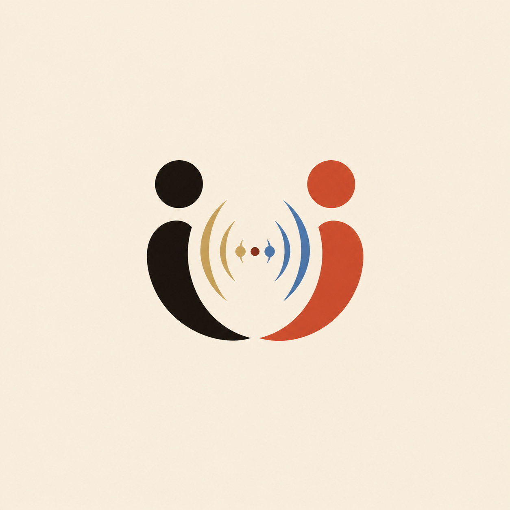
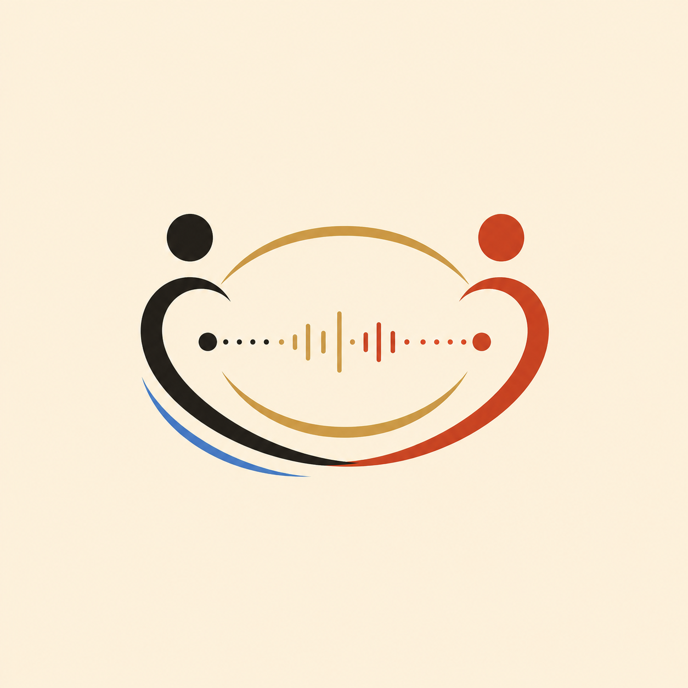

Internal brand review
Human Conversation mark directions.
DECISION: concept 3 is the seed direction because it reads as people, voice, and shared feeling signal without relying on baked-in text.

DECISION: concept 3 is the seed direction because it reads as people, voice, and shared feeling signal without relying on baked-in text.

